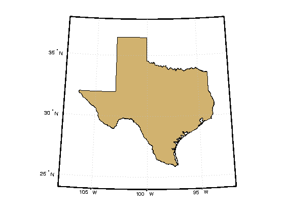
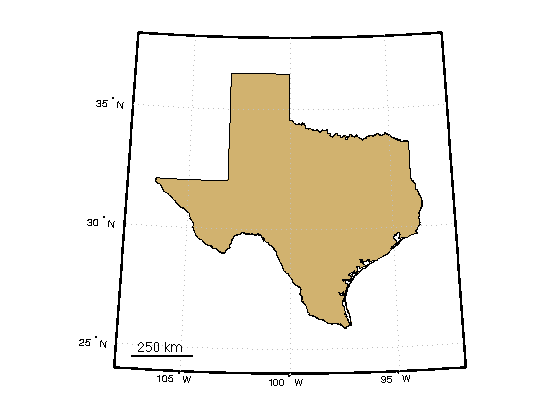
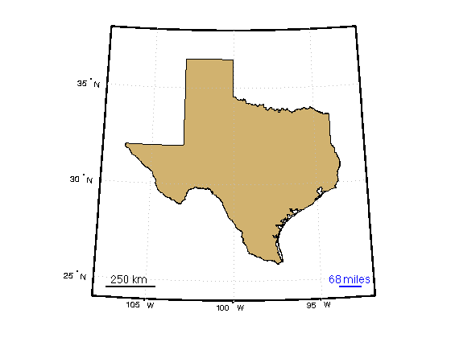
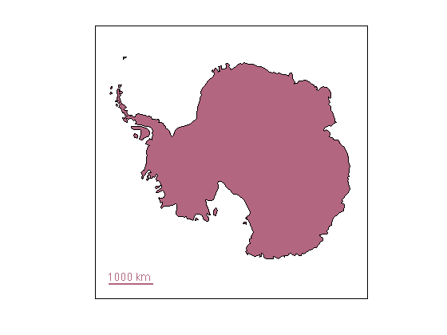
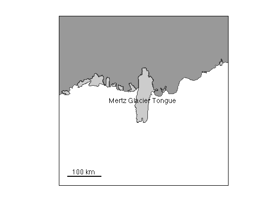

scalebar documentation
scalebar is part of Antarctic Mapping Tools for Matlab (Greene et al., 2017). Click here for a complete list of functions in AMT.
The scalebar function places a graphical reference scale on a map. This function was designed as a simpler alternative to the built-in scaleruler function.
This function requires Matlab's Mapping Toolbox.
Contents
Syntax
scalebar
scalebar('length',ScaleLength)
scalebar('units',LengthUnit)
scalebar('location',LocationOnMap)
scalebar('orientation',ScalebarOrientation)
scalebar('TextProperty',TextValue)
scalebar('LineProperty',LineValue)
h = scalebar(...)Description
scalebar places a graphical reference scale at the lower left-hand corner of a map. Length of the scale is determined automatically based on current extents of the map.
scalebar('length',ScaleLength) specifies the length of the scalebar. Default ScaleLength is approximately one fifth of the width of the current map.
scalebar('units',LengthUnit) specifies a length unit. Most common length units are supported. Text of the scalebar label matches input length unit--i.e., If LengthUnit is 'mi', a scalebar may show 100 mi as its label. If you enter 'miles', the scaleba|r will show 100 miles as its label. Default |LengthUnit is 'km'.
scalebar('location',LocationOnMap) specifies location of the scalebar on the map. Location can be
- 'southwest' or 'sw' (lower left) {default}
- 'northwest' or 'nw' (upper left)
- 'northeast' or 'ne' (upper right)
- 'southeast' or 'se' (lower right)
scalebar('orientation',ScalebarOrientation) specifies a 'vertical' or 'horizontal' scalebar. Default ScalebarOrientation is 'horizontal'.
scalebar('TextProperty',TextValue) specifies properties of text.
scalebar('LineProperty',LineValue) specifies properties of the reference scale line.
h = scalebar(...) returns a handle h for the scalebar.
Example 1: Texas
Start by initializing a map of Texas. Matlab has a built-in method of loading shapefiles of states, but that process is always a bit clunky and unintuitive. I prefer my borders function because it's more straightforward. And to get the RGB values of tan I'm using my rgb function.
worldmap([24 38],[-108 -92]) borders('texas','facecolor',rgb('tan'))
The simplest way to place a scalebar on the map is to type:
scalebar
You may want to specify properties of your scalebar. Specify as many properties as you'd like using name-value pairs. Let's place a 68 mile long blue scalebar in the lower right hand corner of the map and italicize the label:
scalebar('length',68,... 'units','miles',... 'color','b',... 'location','se',... 'fontangle','italic')
Example 2: Antarctica
This example requires Antarctic Mapping Tools.
figure load coast antmap patchm(lat,long,[0.7 0.4 0.5]) scalebar('color',[0.7 0.4 0.5])
Example 3: Mertz Glacier Tongue
This example requires the Bedmap2 Toolbox for Matlab.
figure bedmap2 'patchgl' bedmap2('patchshelves','oceancolor',rgb('ocean blue')) mapzoom 'Mertz Glacier Tongue' scarlabel('Mertz Glacier Tongue','fontangle','italic') scalebar
Citing AMT
If this function or any other part of Antarctic Mapping Tools is useful for you, please cite the paper that describes AMT.
Greene, C. A., Gwyther, D. E., & Blankenship, D. D. Antarctic Mapping Tools for Matlab. Computers & Geosciences. 104 (2017) pp.151-157. doi:10.1016/j.cageo.2016.08.003.
Author Info.
This function was created by Chad A. Greene of the University of Texas Institute for Geophysics (UTIG) in 2013. This function was originally designed for the Bedmap2 Toolbox for Matlab, but has been slightly updated for inclusion in the Antarctic Mapping Tools package. Although this function was designed for Antarctic maps, it should work for other maps as well. Updated July 2015 to allow any length unit and automatic sizing based on current map extents.